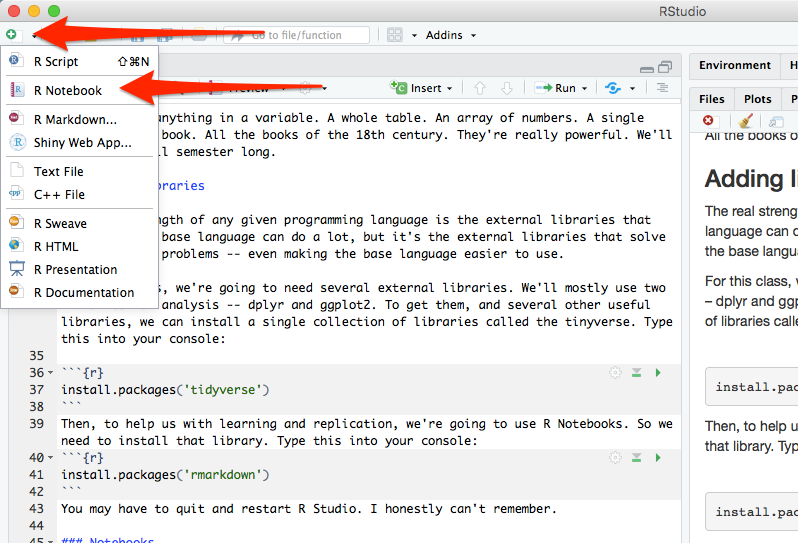

2 The very basics
R is a programming language, one specifically geared toward statistical analysis. Like all programming languages, it has certain built-in functions and you can interact with it in multiple ways. The first, and most basic, is the console.
Think of the console like talking directly to R. It’s direct, but it has some drawbacks and some quirks we’ll get into later. For now, try typing this into the console and hit enter:
2+2[1] 4Congrats, you’ve run some code. It’s not very complex, and you knew the answer before hand, but you get the idea. We can compute things. We can also store things. In programming languages, these are called variables. We can assign things to variables using <-. And then we can do things with them. The <- is a called an assignment operator.
number <- 2
number * number[1] 4Now assign a different number to the variable number. Try running number * number again. Get what you expected?
We can have as many variables as we can name. We can even reuse them (but be careful you know you’re doing that or you’ll introduce errors). Try this in your console.
firstnumber <- 1
secondnumber <- 2
(firstnumber + secondnumber) * secondnumber[1] 6We can store anything in a variable. A whole table. An array of numbers. Every college basketball game played in the last 10 years. A single word. A whole book. All the books of the 18th century. They’re really powerful. We’ll explore them at length.
2.1 Adding libraries, part 1
The real strength of any given programming language is the external libraries that power it. The base language can do a lot, but it’s the external libraries that solve many specific problems – even making the base language easier to use.
For this class, we’re going to need several external libraries.
The first library we’re going to use is called Swirl. So in the console, type install.packages('swirl') and hit enter. That installs swirl.
Now, to use the library, type library(swirl) and hit enter. That loads swirl. Then type swirl() and hit enter. Now you’re running swirl. Follow the directions on the screen. When you are asked, you want to install course 1 R Programming: The basics of programming in R. Then, when asked, you want to do option 1, R Programming, in that course.
When you are finished with the course – it will take just a few minutes – it will first ask you if you want credit on Coursera. You do not. Then type 0 to exit (it will not be very clear that’s what you do when you are done).
2.2 Adding libraries, part 2
We’ll mostly use two libraries for analysis – dplyr and ggplot2. To get them, and several other useful libraries, we can install a single collection of libraries called the tidyverse. Type this into your console: install.packages('tidyverse')
NOTE: This is a pattern. You should always install libraries in the console.
Then, to help us with learning and replication, we’re going to use R Notebooks. So we need to install that library. Type this into your console: install.packages('rmarkdown')
2.3 Notebooks
For the rest of the class, we’re going to be working in notebooks. In notebooks, you will both run your code and explain each step, much as I am doing here.
To start a notebook, you click on the green plus in the top left corner and go down to R Notebook. Do that now.

You will see that the notebook adds a lot of text for you. It tells you how to work in notebooks – and you should read it. The most important parts are these:
To add text, simply type. To add code you can click on the Insert button on the toolbar or by pressing Cmd+Option+I on Mac or Ctl+Alt+I on Windows.
Highlight all that text and delete it. You should have a blank document. This document is called a R Markdown file – it’s a special form of text, one that you can style, and one you can include R in the middle of it. Markdown is a simple markup format that you can use to create documents. So first things first, let’s give our notebook a big headline. Add this:
# My awesome notebook
Now, under that, without any markup, just type This is my awesome notebook.
Under that, you can make text bold by writing It is **really** awesome.
If you want it italics, just do this on the next line: No, it's _really_ awesome. I swear.
To see what it looks like without the markup, click the Preview or Knit button in the toolbar. That will turn your notebook into a webpage, with the formatting included.
Throughout this book, we’re going to use this markdown to explain what we are doing and, more importantly, why we are doing it. Explaining your thinking is a vital part of understanding what you are doing.
That explaination, plus the code, is the real power of notebooks. To add a block of code, follow the instructions from above: click on the Insert button on the toolbar or by pressing Cmd+Option+I on Mac or Ctl+Alt+I on Windows.
In that window, use some of the code from above and add two numbers together. To see it run, click the green triangle on the right. That runs the chunk. You should see the answer to your addition problem.
And that, just that, is the foundation you need to start this book.